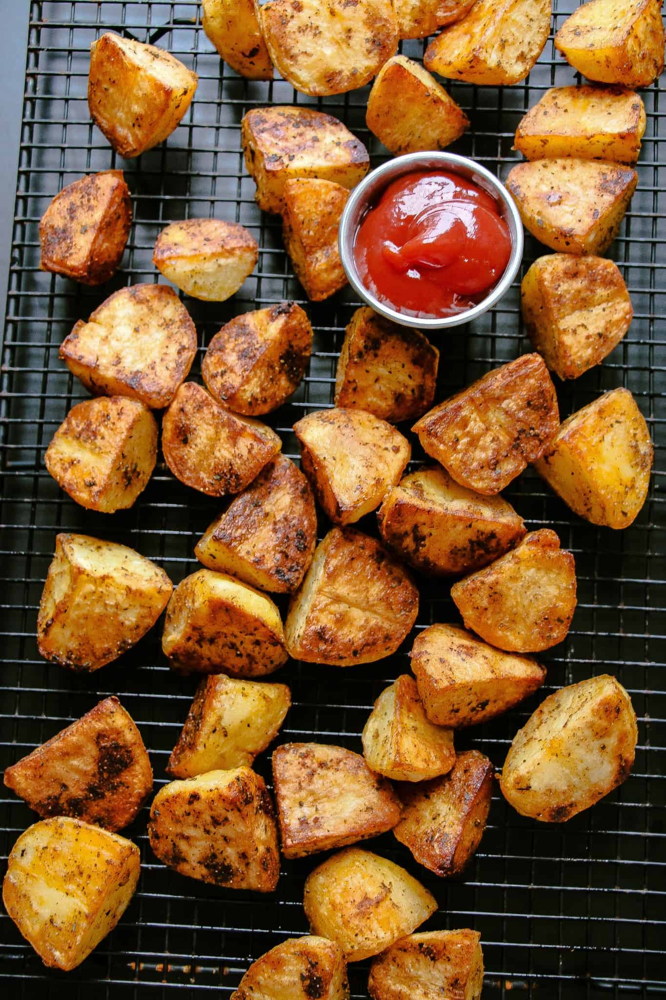

Homepage
Roasted Potatoes

Description
Roasted potatoes are a great side dish that go well with any meal.
Ingredients
- Olive Oil
- Garlic
- Basil
- Salt
- Thyme
- Potatoes
Steps
- Boil a pot of water.
- In the meantime, dice potatoes to a bite-size pieces.
- Boil the potatoes until slightly under fork-tender. Strain.
- Toss potatoes in olive oil, garlic, salt, basil, rosemary, and thyme.
- Bake at 425F until golden brown.
- Enjoy!